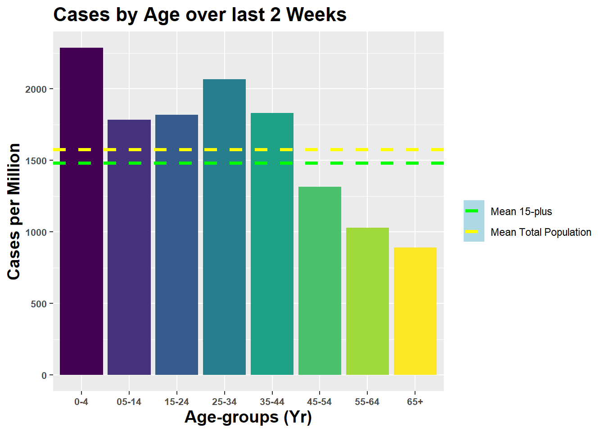

Below we show the breakdown by age of the infected over the last 2 weeks. The mean cases per million for the total population is shown as the yellow dashed line, as well as the mean excluding children (where incidence may be lower) as the green dashed line. Updated as of 2021-03-29.
